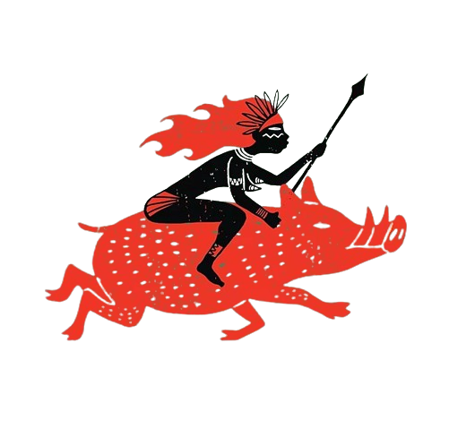

Caipóra
Lenda Da Caipóra
Caipora é uma personagem de lenda do folclore brasileiro.
Se trata de uma criatura que habita as florestas,
conhecida como protetora dos animais. Tradicionalmente,
é vista como aquela que protege os seres selvagens dos caçadores,
sobretudo daqueles que matam mais animais do que o necessário para a sua sobrevivência.

Curiosidade
A caipora teria grandes cabelos, sendo que em algumas versões seus eles são de cor avermelhada.
Ela teria o corpo com muitos pelos e usaria roupas indígenas. Em algumas regiões,
há aqueles que acreditam que a caipora mantém relações sexuais com homens,
exigindo deles fidelidade eterna.